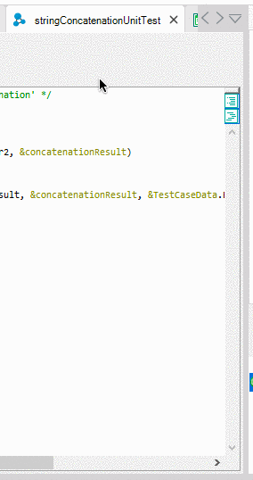
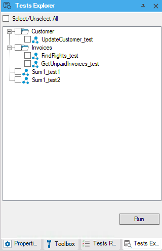
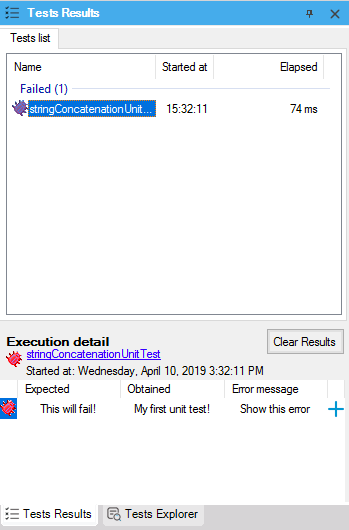
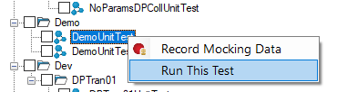

There are 4 ways to run unit tests:
1 - Using the context menu in the Unit Test objectRight-click on the unit test object's tab and then select "Run unit test" option  2 - Using the Tests Explorer Tests Explorer is a tree view containing all the tests that are currently in your knowledge base. To run the test from GeneXus IDE, go to the Tests Explorer window, and select each one you want to run, then press the Run button to execute tests and see the results.  Also, you can run a test by right-clicking a test and selecting the option Run This Test.  Each time you run test cases from GeneXus IDE, you will find it useful to take a look at the “Tests Results” window, which contains the list of test results grouped by results. After selecting each test, the Execution detail panel appears showing:
This window is used to understand test results when they fail. 3 - Using the “Run tests after build” optionThis mode enables developers to run unit tests on a local (IDE) environment after each build. 4 - Using a CI/CD toolThe best way to run unit tests is to integrate them on your Continuous Integration cycle, so you can trust that each change that has been sent to GXserver will be tested using this framework. |
| Backlinks | ||
| Toc:GXtest v4 | GXtest v4 Licensing | GXtest v4 Licensing (GeneXus 17 upgrade 2 and prior) |